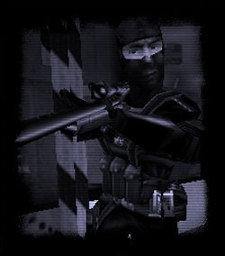

| Sven
Co-op Version 3.0 Beta Test
Pleasing
Taste, Some Monsterism |
|
|
Sven Co-op is a Co-operative based game for Valve Software's Half-Life. In this mod, players must work together against computer controlled enemies and solve puzzles as a team.
It is essential that you are at least familiar with Half-Life and its controls, and it is recommended that you have completed Half-Life's Hazard Course.
While Sven Co-op is similar to Half-Life, with similar weapons, monsters and characters, the difficulty has been increased.
Sven Co-op's levels are set as missions and are generally separate from each other. Many missions span several maps, and some are collected together in a series. The aim of most levels is to reach the end or to achieve an objective -- obtaining a high score is not essential to beat a level, its just part of the fun.
|
Setting up Sven Co-op
Installing Sven Co-op
Run the executable installation file and follow the instructions. Remember to check that your Half-Life version is up-to-date.
 | Make sure you install to your Half-Life\ directory. A folder for Sven Co-op will be created automatically. |
| If you are running Steam, you will need then pak0.pak file from a non-Steam version of Half-Life to install full SP support (this is generally only necessary if you are going to host a multiplayer game using Half-Life's Single-Player missions. See This Page for full information). |
Launching Sven Co-op
Just use one of the shortcuts in the 'Sven Co-op' Start Menu group, or on the desktop. Alternately, you can:
In Steam: Load Steam, open the Games menu, and double-click on "Sven Co-op".
In WON: Launch Half-Life. Click on the "Custom Game" button. Select Sven Co-op from the list, then click "Activate".
Setting up your Sven Co-op controls
Sven Co-op adds several actions/commands not present in the original Half-Life. Before playing, you will need to set keys to these commands. To do so: Return to the Main Menu.
Click "Options" (or "Customize").
Click on "Controls".
Configure your controls as appropriate.
|
The Players
Your team-mates in Sven Co-op (other players attempting the same mission) will commonly look similar to the figure on the right, though there are many character models to choose from. All players have exactly the same abilities as you, and can fight just as hard. It is essential that you co-operate with your team-mates, as most Sven Co-op levels are a lot harder than the original Half-Life missions, with stronger enemies and more combat.
You may also need to work with your teammates to solve puzzles or to activate certain buttons.
| You cannot hurt or kill your team-mates. Consider any attempt to do so as a waste of ammunition. |
|
|
The Monsters
Stopping you from achieving your objectives are the computer-controlled "monsters" (AI enemies). These appear in greater numbers than players and are a lot smarter than they were the original Half-Life, with new tactics and abilities.
In most cases, monsters are hostile and should be killed as soon as possible. Occasionally, however, you will meet "friendly" (player-allied) monsters, who can follow you and attack your enemies (more on that later).
| For a full list of new enemies in Sven Co-op, check here. |
| Sven Co-op features monster-replacement technology, allowing level designers to add unique monsters to their maps (e.g. Axis soldiers in AfrikaKorps, sharks in Incoming). Sometimes these monsters may be similar to generic Half-Life monsters, but in other cases they may be stronger, faster or have new attacks. When playing a new map, you can never be certain of what you might find yourself up against... |
|

|
Allies
Not all computer-controlled monsters are out to kill you -- some monsters will work with you against hostile monsters. To identify these allies, use the in-game Friend or Foe system.
Simply point your crosshairs at a monster -- information will show up in the bottom-left corner of your screen. If the monster is going to attack you, the information will show up red. If it is green, the monster is an ally and will help you. The Friend or Foe system also provides useful information about a monster or player's health and name.
| "Friendly" monsters can follow you just as Barney can, and even be given some simple orders. More information here. |
| For a full list of new Allies in Sven Co-op, check here. |
|

|
New Weapons and Equipment
Upon death or joining the game, players are normally given a preset range of equipment and ammo... the type and amount varies between maps. It is also possible to pick up new weapons, ammo and equipment in a map. The weapons you can pick up are generally better than your starting equipment and you should keep an eye out for them.
| In many maps, equipment is stored at the spawn location. If you find yourself running low on ammo, you may wish to backtrack to your starting location in order to restock. |
| For a full list of new Weapons and Equipment in Sven Co-op, check here. |
| Sven Co-op features weapon-replacement technology, allowing each map to include its own unique weapons (WW2-era weapons in AfrikaKorps, for example). These weapons will usually work in a similar way to the default weapons, but may deal out drastically different amounts of damage. |
|

|
Back to Front Page
|
©
2003 . All
Rights Reserved.
|
|